User Guide
Overview
PropMaster PCG is three dressing tools for Unreal Engine 5.8 that turn a blockout into a dressed scene in minutes. Each tool is a Blueprint you drag into the level, fill with meshes, and tune from its Details panel.
| Tool | Blueprint | Use it for |
|---|---|---|
| Spline | BP_PCG_PropMaster_Spline | Paths, walls, fences and pipes along a spline, or scatter filling a closed spline area |
| Volume | BP_PCG_PropMaster_Volume | Dressing a box: floors, walls and ceilings of a room, or the outside of rocks and props inside it |
| Mesh Cover | BP_PCG_PropMaster_CoverMesh | Growing moss, vines, debris and decals over meshes already in the level |
All three share the same building blocks: layers of main meshes, Cluster Mesh around them, Cover Mesh by Intent on top of them, Decals, an Optimize section and the Footprint cost readout.
Your first result
- Find the Blueprints under PropMasterPCG Content > Tools and drag one into the level.
- Shape it: move the spline points, or scale the volume box over your area.
- In Prop Master, open layer Index [0] and add a mesh under Spawning > Static Meshes.
- Click Refresh under PCG Controllers. The tool regenerates by itself after most edits; Refresh forces it.
- Add more layers for more kinds of meshes. Later layers can avoid what earlier layers placed.
Panel basics
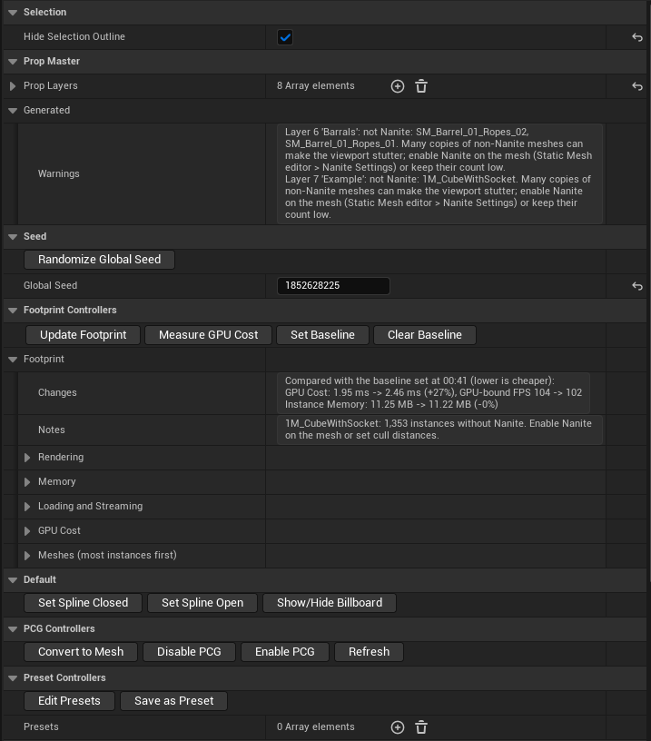
Every tool's Details panel has the same top-level sections, in this order. Collapsing a layer and opening it again folds its sections, so long panels stay easy to scan.
| Section | Setting or button | What it does |
|---|---|---|
| Selection | Hide Selection Outline | Removes the orange selection outline from the spawned meshes while the tool is selected, so you can judge the look. It comes back when deselected. |
| Prop Master / Mesh Cover | Layers (Prop Layers, Mesh Cover Layers) | The list of layers this tool spawns, in order. Each layer is one kind of dressing. Later layers can avoid earlier ones. |
| Layer | Layer Title | The name shown on the collapsed layer and in front of its sections. |
| Layer | Mute | Skips the layer without losing its settings. |
| Layer | Solo | When any layer is soloed, only soloed layers generate. Use it to tune one layer at a time. |
| Seed | Global Seed | Offsets every random choice in the tool. |
| Seed | Randomize Global Seed | Picks a new random Global Seed and regenerates. |
| Footprint Controllers | Update Footprint, Measure GPU Cost, Set Baseline, Clear Baseline | Cost readout of what the tool made. See Footprint. |
| PCG Controllers | Refresh | Rebuilds the layers and regenerates. Use it after editing a preset asset, or on the Mesh Cover tool after moving the meshes it covers. |
| PCG Controllers | Convert to Mesh | Bakes the spawned meshes into a new plain actor where they are, and switches the tool's PCG off so nothing spawns twice. |
| PCG Controllers | Disable PCG / Enable PCG | Removes the spawned meshes and stops regenerating, or switches it back on and regenerates. |
| Preset Controllers | Presets | Preset assets whose layers are added to this tool's own at generation time. |
| Preset Controllers | Save as Preset | Saves all layers into a new Preset asset, ready to add to another tool of the same kind. |
| Preset Controllers | Edit Presets | Copies every preset's layers into the tool's own layers, where you can edit them, and empties the Presets list. |
| Generated (advanced) | Warnings | Plain-language problems from the last build, such as an empty mesh list or a tag no actor has. Check it first when something does not spawn. |
Most changes regenerate on their own. Every random choice is seeded, so the same settings always give the same result.
Seed
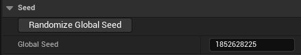
Global Seed offsets every random choice in the tool, on top of each layer's own seeds. Randomize Global Seed picks a new value and regenerates, a quick way to try a fresh variation of the whole tool. Type an earlier number back in to return to a result you liked.
PCG Controllers
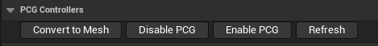
Convert to Mesh bakes the spawned meshes into a new plain actor where they are, and switches the tool's PCG off so nothing spawns twice. Disable PCG removes the spawned meshes and stops regenerating; Enable PCG switches it back on and regenerates. Refresh rebuilds the layers and regenerates, which you need after editing a preset asset, or on the Mesh Cover tool after moving the meshes it covers.
Preset Controllers
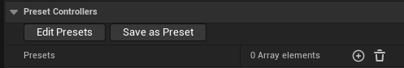
Presets lists preset assets whose layers are added to the tool's own when it generates, so one setup can be reused across many tools. Save as Preset saves all of the tool's layers into a new Preset asset, ready to add to another tool of the same kind. Edit Presets copies every listed preset's layers into the tool's own layers, where you can edit them, and empties the Presets list so nothing spawns twice. The preset assets themselves are left untouched.
Spline tool
The Spline tool places meshes along a spline or fills the area inside a closed spline. Each layer runs through the sections below, top to bottom.
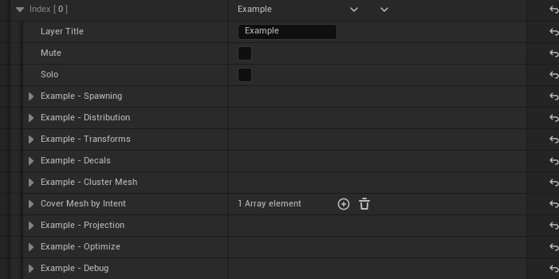
Default controls
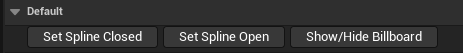
Set Spline Closed joins the last spline point back to the first, making a loop that Inside the Spline can fill. Set Spline Open breaks the loop again. Show/Hide Billboard toggles the tool's editor icon in the viewport; it never shows in game.
Spawning: what gets placed
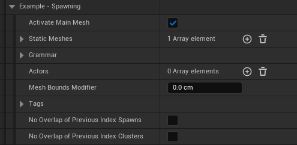
| Setting | What it does |
|---|---|
| Activate Main Mesh | Spawns this layer's main meshes. Off skips them; clusters and cover can still run. |
| Static Meshes | The meshes picked for each point, each with its own controls (below). |
| Actors | Blueprint actors picked at random alongside the meshes (each counts as Weight 1). They are real actors, so keep counts modest. |
| Mesh Bounds Modifier | Grows or shrinks the layer's footprint (width and length only) for its clusters, tag filters and later layers' overlap checks. |
Per mesh controls
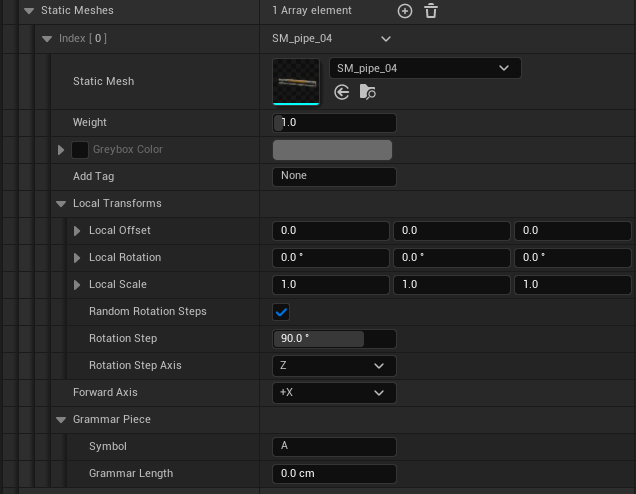
| Setting | What it does |
|---|---|
| Weight | How often this mesh is picked. 2 = twice as often as 1, 0 = never. |
| Greybox Color | Spawns this mesh in a flat color for blockouts. Untick it to get its own materials back; the mesh asset is never changed. Cluster Mesh entries have it too. |
| Add Tag | Tags the spawned meshes, so other tools' tag filters can see them (for example, keep another spline's clusters off them). |
| Local Transforms | This mesh's own offset, rotation and scale, to fix off-centre pivots, wrong facing or mismatched sizes. Random Rotation Steps turns it by whole steps (90 = quarter turns) for modular pieces that must stay square. |
| Forward Axis | The mesh axis that runs along the spline, for Grammar and Mesh Along Spline. |
| Grammar Piece | This mesh's Symbol (its letter in the Grammar pattern) and Grammar Length (0 = the mesh's own length). |
Grammar
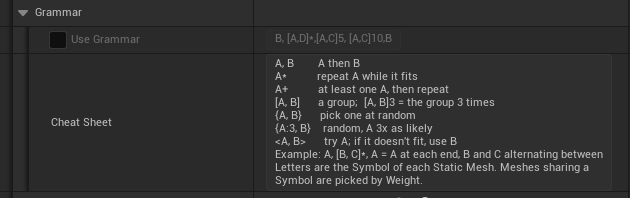
Use Grammar lays the meshes end to end along the spline in a pattern of their Symbol letters instead of scattering them. It works along the spline only. The Cheat Sheet in the panel lists the pattern syntax: A, B in order, A* repeat while it fits, [A, B]3 a group three times, {A, B} pick one at random, <A, B> try A and fall back to B.
Tag controls
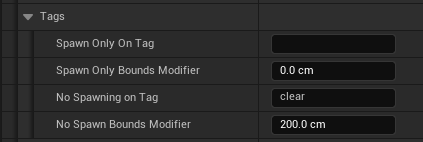
Spawn Only On Tags spawns only on actors and meshes carrying any of the listed tags; No Spawning on Tags never spawns on them. Add a tag with the + button, one per entry. Each list has a bounds modifier that grows (positive) or insets (negative) the tagged area.
Index control
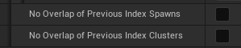
No Overlap of Previous Index Spawns / Clusters keeps this layer clear of the meshes and clusters placed by the layers above it in the list.
Distribution: where and how many
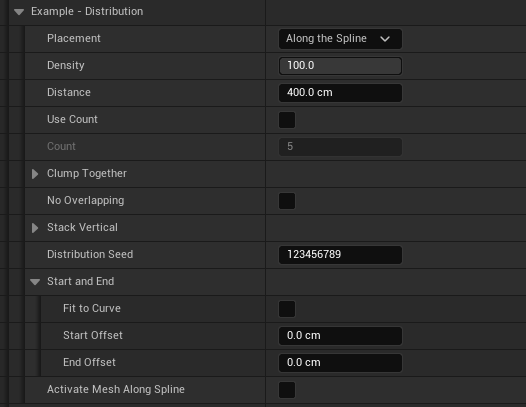
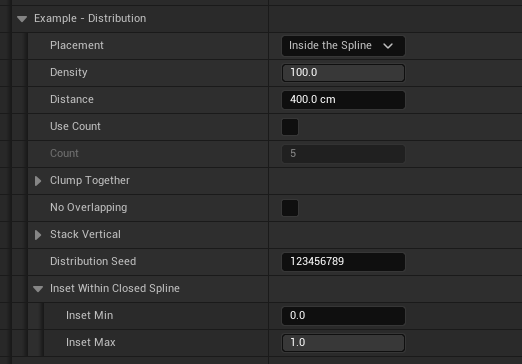
| Setting | What it does |
|---|---|
| Placement | Along the Spline places a line of meshes (Mesh Along Spline and Grammar work here). Inside the Spline fills the closed spline's area. Each layer picks its own, so one spline can have a wall along it and trees inside. |
| Density | Percent of candidate points kept. |
| Distance | Spacing between candidate points. |
| Use Count / Count | Spawns an exact number of points instead of using Distance. |
| Clump Together | Gathers meshes into patches. Clumping 0 = even scatter, 1 = tight clumps. Clump Size sets the patch size, Clump Pull moves points toward the patch centre and Min Spacing pushes them apart again. |
| No Overlapping | Removes meshes whose bounds overlap another of this layer (one survives). |
| Stack Vertical | Stacks rows of each mesh. See below. |
| Distribution Seed | Re-rolls this layer's point pattern. |
| Inset Within Closed Spline (inside only) | Inset Min keeps points away from the edge; Inset Max keeps only a band along the edge. Both are shares of the way to the centre. |
| Start and End (along only) | Fit to Curve adjusts spacing to fit the spline exactly. Start / End Offset leave the ends empty. |
| Activate Mesh Along Spline (along only) | Bends one mesh along the whole spline (pipes, fences, curbs) instead of scattering. Mesh Along Spline Scale sets its thickness. |
Clump Together
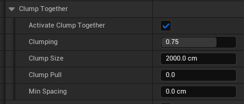
Clump Together gathers the meshes into patches with open ground between them. Clumping goes from 0 (an even scatter) to 1 (tight clumps). Clump Size sets how big a patch and the gaps between patches are. Clump Pull moves the kept meshes toward the middle of their patch, and Min Spacing then pushes any that end up too close apart again, without removing any.
Stack Vertical
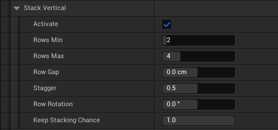
Stack Vertical builds rows of each mesh on top of itself. Along the spline it makes a wall; inside the spline each point becomes its own pile. Rows always sit on the real size of the mesh below, and a tilted piece makes a stack that leans with it.
| Setting | What it does |
|---|---|
| Activate | Turns stacking on for this layer. |
| Rows Min / Rows Max | Rows per stack, counting the bottom one. Each stack picks a count in this range. |
| Row Gap | Positive leaves a gap; negative sinks rows into each other (rocks, sandbags). |
| Stagger | Wall: every other row slides along by this share of the mesh length (0.5 = brick pattern). Pile: each row shifts and turns a little at random. |
| Row Rotation | Each row turns this many degrees further than the row below. 90 = log-cabin crossing; small values twist the stack. |
| Taper (walls only) | Each row is this much smaller than the one below (0.1 = 10%), for sandbag or dry-stone walls. |
| Keep Stacking Chance | Above Rows Min, the chance a stack goes on to the next row. Below 1 gives a ragged top or piles of different heights. Nothing ever floats. |
Cover Mesh by Intent puts Top cover only on the top piece of each stack and Bottom cover only on the bottom row. It is not available with Mesh Along Spline. Actors stack too: their size comes from the Blueprint's static meshes, so a set with tall parts (poles, lamps) stacks on its tallest part; use a negative Row Gap to pull those rows down.
Transforms
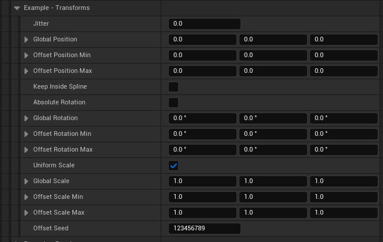
| Setting | What it does |
|---|---|
| Jitter | Randomises where each point lands inside its spacing cell. 0 = exact spacing (lights, fence posts), 1 = anywhere in the cell. |
| Global Position / Rotation / Scale | Applied to every mesh in the layer. |
| Offset Position / Rotation / Scale Min and Max | A random amount between Min and Max per mesh, per axis. Uniform Scale uses only X. |
| Keep Inside Spline / Keep Inside Margin | Inside the spline: a mesh pushed outside by the offsets gets a new or smaller offset, and is only dropped if its own spot is outside. Margin keeps big meshes from hanging over the edge. |
| Absolute Rotation | Uses Global Rotation as the final rotation instead of following the surface. |
| Offset Seed | Re-rolls the random offsets. |
Keep Inside Spline
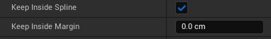
With Placement set to Inside the Spline, random position offsets can push a mesh past the edge. Keep Inside Spline gives that mesh a new or smaller offset so it stays near its spot, and only drops it if its own spot is outside. Keep Inside Margin is how far inside the edge a mesh's centre must stay; raise it for big meshes so they don't hang over (about half the mesh's width).
Projection: landing on the ground
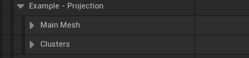
Projection drops each point onto the surface below it. Main Mesh and Clusters have the same settings, each on its own.
Main Mesh
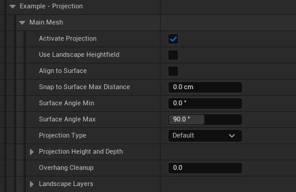
| Setting | What it does |
|---|---|
| Activate Projection | Projects onto the surface. Off keeps the spline's own height. |
| Use Landscape Heightfield | Much faster than rays on landscapes, when there is no snap limit or slope range. |
| Align to Surface | Tilts each mesh to the surface. |
| Snap to Surface Max Distance | Drops points whose surface is farther than this. 0 = no limit. |
| Surface Angle Min / Max | Steepness allowed, in degrees: 0 = flat, 90 = vertical, 180 = ceiling. 30 to 40 keeps meshes off steep hills. |
| Projection Type | Default, Mesh Only, Landscape Only, or Landscape and Mask Mesh: which surfaces the ray may land on. |
| Overhang Cleanup | 0 = off. 1 removes any mesh hanging past the edge of its surface; 0.5 needs half of its footprint supported. |
Projection Height and Depth
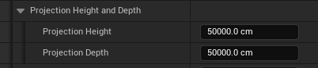
Projection Height is where the ray starts above the point, and Projection Depth is how far below it reaches. Lower them to land under a bridge or roof.
Landscape Layers
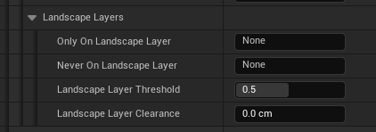
Only On Landscape Layer and Never On Landscape Layer pick a paint layer by name. Landscape Layer Threshold is the paint weight that counts as on the layer. Landscape Layer Clearance checks a ring that far around each mesh, which keeps tree canopies off roads.
Clusters
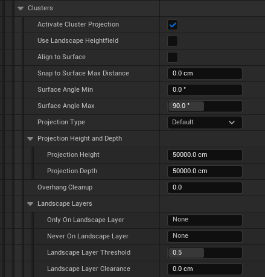
Identical to Main Mesh, applied to the cluster meshes, starting with Activate Cluster Projection.
Cluster Mesh: smaller meshes around each main mesh
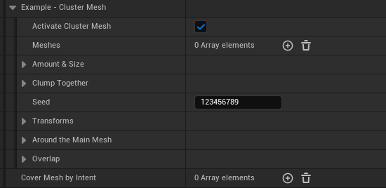
Activate Cluster Mesh spawns clusters around each main mesh, and Meshes lists the cluster meshes with a Weight each. Seed reshuffles the clusters without touching the main meshes.
Meshes
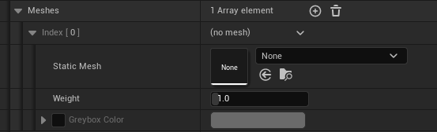
Each entry is one cluster mesh. Weight sets how often it is picked compared with the others. Greybox Color works the same as on Static Meshes: tick it and pick a color to show the mesh flat-shaded in that color.
Amount & Size
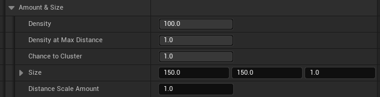
Density (percent) sets how many clusters spawn, and Density at Max Distance thins them toward the edge. Chance to Cluster is the share of main meshes that get a cluster at all. Size is the half-size of the cluster area in cm, and Distance Scale Amount sets the scale of meshes at the edge.
Clump Together
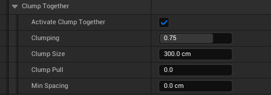
Identical to Clump Together in Distribution, applied to the cluster meshes.
Transforms
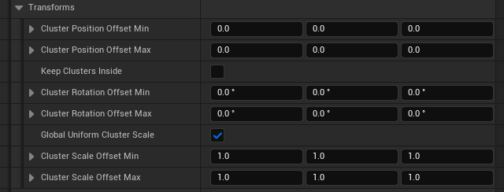
Cluster position, rotation and scale offsets, each a Min and Max. Global Uniform Cluster Scale keeps scaling even on all axes. Keep Clusters Inside works the same as Keep Inside Spline, with its own margin.
Around the Main Mesh
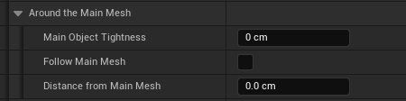
Main Object Tightness pushes clusters away from the main mesh (positive) or lets them closer (negative). Follow Main Mesh removes a cluster when its main mesh is removed. Distance from Main Mesh caps how far clusters reach.
Overlap
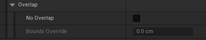
No Overlap keeps cluster meshes apart, and Bounds Override sets the spacing size it uses.
Decals
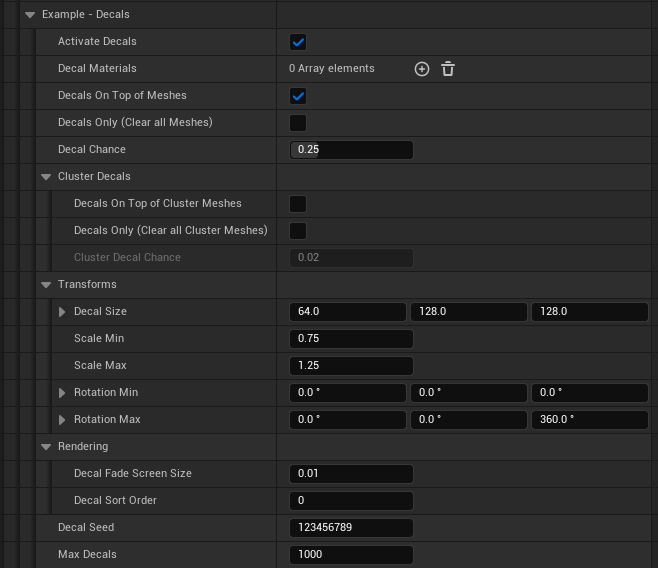
| Setting | What it does |
|---|---|
| Activate Decals / Decal Materials | Turns decals on. Materials must use the Deferred Decal domain. Each decal is an actor. |
| Decals On Top of Meshes / Decal Chance | Adds decals at a share of the spawn points, on top of the meshes. Off mixes decals in with the meshes instead. |
| Decals Only (Clear all Meshes) | This layer spawns only decals. |
| Cluster Decals | Decals on the cluster points, on top of or instead of the cluster meshes, with their own chance. |
| Transforms | Decal Size (X = projection depth), random scale and spin. |
| Rendering | Decal Fade Screen Size and Decal Sort Order. |
| Max Decals | Caps the decal count. Thousands of decal actors get slow. 0 = no limit. |
Optimize
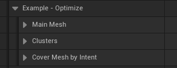
Main Mesh, Clusters and Cover Mesh by Intent each have the same switches.
Main Mesh
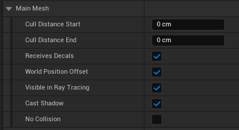
The same options appear for every mesh type, described in the table below.
Clusters
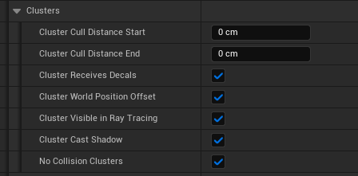
Identical to Main Mesh, for the cluster meshes.
Cover Mesh by Intent
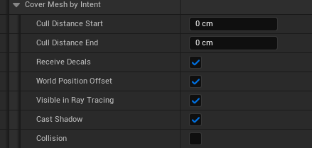
Identical to Main Mesh for every cover entry in the layer, except that cover meshes have a Collision switch in place of No Collision. It is off by default.
| Setting | What it does |
|---|---|
| Cull Distance Start / End | Fades meshes out between these distances. 0 = never culled. |
| Receives Decals | Off keeps decals off these meshes (turn off for trees and grass). |
| World Position Offset | Off stops wind animation. Saves GPU on large counts and fixes blinking shadow blobs. |
| Visible in Ray Tracing | Off makes Lumen and ray tracing ignore them. Helps dense grass that shows dark blotches. |
| Cast Shadow | Off: no shadows. A big saving for grass, pebbles, debris and moss. |
| No Collision (main, clusters) / Collision (cover) | Main and cluster meshes can drop collision to save memory. Cover meshes have none unless you turn Collision on. |
Debug
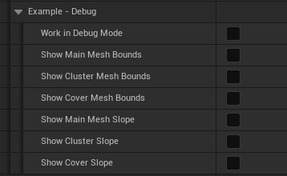
Work in Debug Mode runs every placement step but spawns nothing, so regenerating is fast. The Show switches draw debug boxes for main, cluster and cover bounds, and shade slope ranges from white (Min) to black (Max).
Volume tool
The Volume tool casts a grid of rays across a box and dresses the surfaces they hit. Spawning, Transforms, Cluster Mesh, Decals, Cover Mesh by Intent, Optimize and Debug work as in the Spline tool; this section covers what is different.
Projection (top of the panel)
One setting for the whole tool, above Prop Layers.
| Option | Rays start | Use it for |
|---|---|---|
| Inside a Room | On the centre of the box, going out to each side | Floors, walls and ceilings of a room, and anything inside it |
| Around Objects | On the far side of the box, crossing it | The outside of rocks, ruins and props placed inside the box |
Faces: which surfaces get dressed
The box shows the labels Up, Down, Left, Right, Front and Back. Each checkbox names the way the covered surfaces face, so it means the same thing in both Projection modes.
| Checkbox | Covers | Inside a room this is |
|---|---|---|
| Up-Facing Surfaces | Floors, ground and the tops of objects | The floor |
| Down-Facing Surfaces | Ceilings and the undersides of objects | The ceiling |
| Left-Facing Surfaces | Surfaces facing the Left label | The Right wall |
| Right-Facing Surfaces | Surfaces facing the Right label | The Left wall |
| Front-Facing Surfaces | Surfaces facing the Front label | The Back wall |
| Back-Facing Surfaces | Surfaces facing the Back label | The Front wall |
The same section holds Main Mesh / Cluster Overhang Cleanup (0 = off, 1 = remove anything hanging past its surface's edge) and Minimum Surface Width, which keeps main meshes off ledges and rims narrower than the width you set.
Distribution
| Setting | What it does |
|---|---|
| Density | Percent of rays kept. |
| Use Count / Count | An exact number of rays spread over the chosen faces. |
| Width and Height Controls | Width / Height Spacing = exact distance between rays on each face. Min / Max (0 to 1 of the box) limit rays to a band, for example only the lower half of the walls. Width / Height Scale grow or shrink meshes across the face. |
| Main Surface Angle Min / Max | World slope allowed: 0 = flat floor, 90 = vertical wall, 180 = ceiling. |
| Max Surface Angle | How far a hit surface may tilt away from the face direction and still be used. |
| Align to Surface | On: meshes stand out from the surface they hit. Off: they keep the face direction as up. |
| Clump Together, No Overlapping | Same as the Spline tool. Keep Clump Pull low on uneven walls. |
| Stack Vertical | Piles on every face, growing straight out of the surface: up from floors, sideways out of walls, down from ceilings. Taper is hidden (piles only). |
Clump Together
Identical to the Spline tool's Clump Together. Keep Clump Pull low on uneven walls, since the pull moves meshes sideways.
Volume-only Transforms
| Setting | What it does |
|---|---|
| Surface Facing Axis | Which side of the mesh faces out of its surface (floor, wall or ceiling alike), keeping the mesh upright on walls. Use it instead of a Global Rotation to stand pieces up. |
| Random Rotation Steps | Turns each mesh by whole steps around its own axis (cliff pieces, tiles, crates). |
| Offset From Surface | Moves meshes out from the surface (positive) or sinks them in (negative). |
| Keep Inside Volume / Margin | Drops meshes (and their clusters) pushed outside the box by the offsets. |
Volume limits and debug
- Max Rays (advanced) is a safety limit on all rays in the tool. Tiny spacing on a big box makes a lot of rays, so raise it carefully.
- Max Cluster Points (per layer) (advanced) lowers a layer's Cluster Density for the build, with a Warning, when it would make too many candidates.
- Optimize > Main Mesh > Ray Layers: more than 1 adds extra starting planes, so surfaces hidden behind nearer geometry get reached too.
- Debug > Show Ray Hits draws a small box where each ray hit and a large one where it missed, to show blocked areas.
Mesh Cover tool
The Mesh Cover tool dresses meshes that are already in the level: rocks, cliffs, ruins, or the Spline and Volume tools' own spawns. Each Mesh Cover Layer picks its targets, then places Cover Mesh by Intent entries and decals on them.
Targets: what gets covered
| Setting | What it does |
|---|---|
| Target Actors | Placed actors picked with the eyedropper or drop-down. Every static mesh on them is covered, wherever they are. |
| Target Meshes | Static meshes to cover by asset. Empty = every mesh inside the Spawn Only On Tag area. |
| Search Entire Level | Off: only meshes whose centre is inside the tool's box. On: the whole level (loaded World Partition cells only). |
| Include Instances | Also covers instanced meshes such as foliage and the Spline and Volume tools' spawns, not just Static Mesh actors. |
| Target Size Min / Max | Skips targets smaller or larger than this (largest side, as placed). 0 = no limit. |
Layer contents
| Section | What it does |
|---|---|
| Cover Mesh by Intent | One entry per cover style (moss, vines, debris), each with its own Top / Side / Bottom, Facing and Tags. See Cover Mesh by Intent. |
| Decals | Activate Decals, Decal Materials, Decal Chance (share of cover points that get one), Decals Only (No Cover Meshes), Transforms (size, scale, spin), Rendering and Max Decals. |
| Optimize | Cull distances, decals, wind, ray tracing, shadows and collision for the cover meshes. |
| Debug | Work in Debug Mode, Show Cover Mesh Bounds and Show Cover Slope. |
Max Targets (per layer) is a safety limit on how many targets a layer may ray-trace. The tool does not notice when you move the meshes it covers: click Refresh after moving them.
Cover Mesh by Intent
Cover Mesh by Intent grows smaller meshes over the main meshes (in the Spline and Volume tools) or over the targets (in the Mesh Cover tool). Each entry is one cover style, such as moss, vines or debris. Entries never repeat each other and never space out against each other.
Entry settings
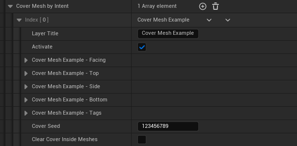
| Setting | What it does |
|---|---|
| Layer Title | The entry's name, shown on the collapsed entry and in front of its sections. |
| Activate | Master switch for the entry. Off places nothing but keeps Top, Side and Bottom as they were. |
| Facing | Covers only the side facing a direction, below. |
| Top / Side / Bottom | The three cover categories, below. |
| Tags | Tag areas for this entry, below. |
| Cover Seed | Re-rolls this entry's cover. |
| Clear Cover Inside Meshes | Removes buried cover, below. |
Facing
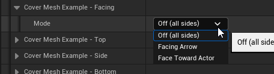
Off (all sides) covers every side. Facing Arrow covers the side facing the tool's forward direction (the Mesh Cover tool shows an orange arrow). Face Toward Actor covers surfaces turned toward a picked actor. Max Angle sets how far a surface may turn away.
Tags
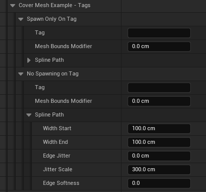
Spawn Only On Tags and No Spawning on Tags set areas for this entry from actors carrying any of the listed tags. Tagged splines make a strip: Spline Path sets its width at each end (Width Start and Width End for a taper), plus Edge Jitter, Jitter Scale and Edge Softness. Other tagged actors use their bounds, grown or inset by Mesh Bounds Modifier.
Clear Cover Inside Meshes
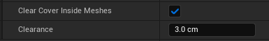
Removes cover buried in or pressed against another surface, checking Clearance cm out from each point.
Top, Side and Bottom
Top covers up-facing surfaces, found by rays cast down. Side covers the object's sides with sideways rays. Bottom covers the base, like moss creeping up from the ground. Each category has its own copy of the same settings; only the Height defaults differ.
Top
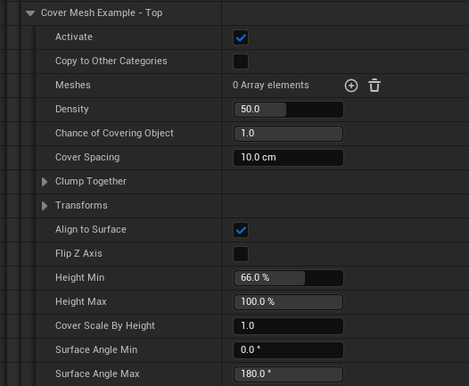
Side
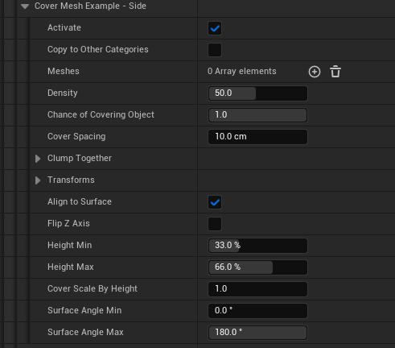
Bottom
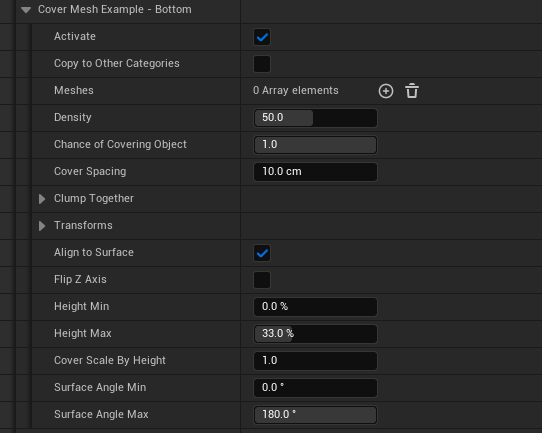
| Setting | What it does |
|---|---|
| Activate | Turns this category on. |
| Copy to Other Categories | Copies this category's meshes and settings into the other two, keeping their Activate and Height. Unticks itself. |
| Meshes | Cover meshes picked at random. Empty = nothing spawns. |
| Density | How tightly the surface is covered. 100 = a candidate every 45 cm. |
| Chance of Covering Object | Chance that each object gets this category at all. |
| Cover Spacing | Minimum distance between two cover meshes of this category. 0 = off. |
| No Overlap / Bounds Override | Removes a cover mesh whose real bounds overlap another of this category (one survives at random). Bounds Override adds cm to each side; negative lets them touch. Cover Spacing only keeps centres apart. |
| Stack Vertical | Piles copies of each cover mesh straight out of its surface: up on tops, sideways on walls, down when Flip Z Axis hangs them. Same rows, gap, stagger, row rotation and chance as the Spline tool; Taper is hidden (piles only). |
| Clump Together | Gathers the cover into patches, identical to Clump Together in Distribution. |
| Transforms | Position, rotation and scale for the cover, below. |
| Align to Surface | The mesh's up axis follows the surface. Off keeps it upright. |
| Flip Z Axis | Hangs the meshes straight down from where they touch, for moss or vines dangling from a ledge. |
| Height Min / Max | The band of each object to cover, in percent of its height (0 = bottom, 100 = top). Defaults: Top 66 to 100, Side 33 to 66, Bottom 0 to 33. |
| Cover Scale By Height | Scale at Height Max (x1 at Height Min). 1 = off. |
| Surface Angle Min / Max | Steepness to cover: 0 = tops, 90 = sides, 180 = undersides. |
Clump Together
Identical to Clump Together in Distribution, gathering this category's cover into patches.
Transforms
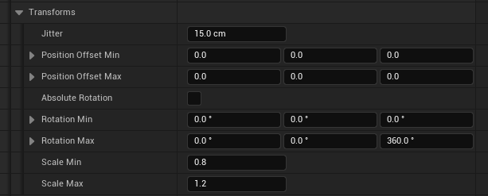
Jitter moves each cover mesh randomly along the surface. Position Offset Min / Max: X and Y slide along the surface, Z lifts or sinks. Absolute Rotation ignores the surface's rotation. Rotation and Scale Min / Max randomize each mesh.
Optimize > Cover Mesh by Intent holds the cull distances, decals, wind, ray tracing, shadow and Collision switches for every entry of the layer. Cover meshes have no collision unless Collision is on.
Footprint
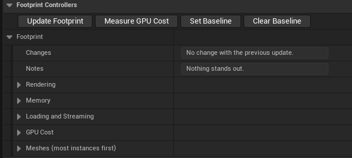
The Footprint section, under Footprint Controllers, shows what the tool made and what it costs. It updates by itself after every generate. Notes and Changes sit at the top: Notes flags likely problems, and Changes shows how far each number moved.
Buttons
| Button | What it does |
|---|---|
| Update Footprint | Recounts now. |
| Measure GPU Cost | Renders a couple of seconds from the current viewport with the tool shown, then hidden, and records the difference. Measure from the same spot before and after a change. |
| Set Baseline | Remembers the current numbers. Changes then compares every later update to them, which suits an optimize pass. |
| Clear Baseline | Forgets the baseline; Changes compares with the previous update again. |
The numbers
Rendering
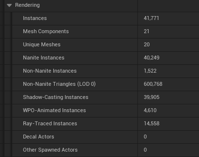
| Number | What it means |
|---|---|
| Instances | Mesh instances this tool spawned. |
| Mesh Components | About one per mesh and settings combination; each is at least one draw call per pass. Fewer is better. |
| Unique Meshes | Different mesh assets in use. |
| Nanite / Non-Nanite Instances | Nanite stays cheap when dense. Large non-Nanite counts are the usual performance trap: enable Nanite or add cull distances. |
| Non-Nanite Triangles (LOD 0) | The worst case up close. |
| Shadow-Casting, WPO-Animated, Ray-Traced Instances | How many instances the matching Optimize switches leave on. |
| Decal Actors, Other Spawned Actors | Each is a full actor. Keep decals in the hundreds, not thousands. |
Memory
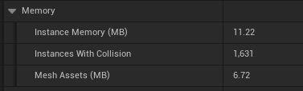
| Number | What it means |
|---|---|
| Instance Memory (MB) | Transforms, render data and collision bodies for these instances. |
| Instances With Collision | Each carries a physics body. Optimize > No Collision removes them. |
| Mesh Assets (MB) | The mesh assets used, shared with anything else using them. Textures and materials are not counted. |
Loading and Streaming
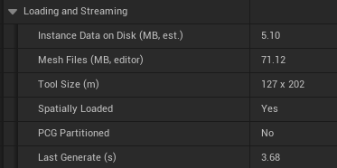
| Number | What it means |
|---|---|
| Instance Data on Disk (MB, est.) | Roughly what the level has to read when this tool loads. |
| Mesh Files (MB, editor) | Mesh asset file sizes in the editor. Cooked builds are usually smaller. |
| Tool Size (m) | Width and length of everything spawned. With World Partition, one big actor loads all its instances at once. |
| Spatially Loaded, PCG Partitioned | Whether World Partition streams the tool by distance, and whether the PCG output is split into cells. |
| Last Generate (s) | How long the last full generate took in the editor. |
GPU Cost
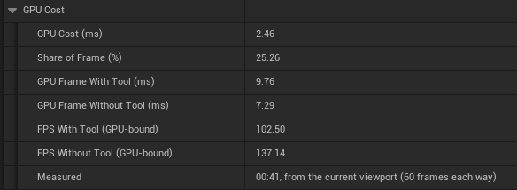
Filled in by Measure GPU Cost. GPU Cost (ms) is the difference between GPU Frame With Tool and GPU Frame Without Tool, and Share of Frame is that difference as a percent of the frame. FPS With / Without Tool are the GPU-bound frame rates. Measured says when and from where, and whether the tool has changed since.
Meshes (most instances first)
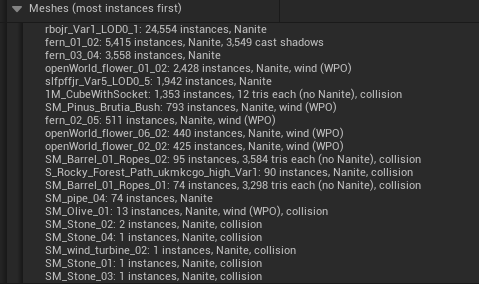
Lists every mesh, heaviest first, so you know where to start optimizing. Each line gives the instance count, then what makes it costly. Some examples from the screenshot:
- fern_01_02: 5,415 instances, Nanite, 3,549 cast shadows means a dense Nanite mesh where most copies still cast shadows. Turning off Cast Shadow for small ferns is a big saving.
- 1M_CubeWithSocket: 1,353 instances, 12 tris each (no Nanite), collision means no Nanite and every copy has collision. Notes flags this one at the top; enable Nanite or set cull distances, and turn on No Collision if nothing needs to hit it.
- openWorld_flower_01_02: 2,428 instances, Nanite, wind (WPO) means every copy animates in the wind. Turning off World Position Offset for distant or tiny flowers saves GPU.
- SM_Barrel_02_Ropes: 95 instances, 3,584 tris each (no Nanite), collision is a low count but heavy per copy without Nanite, a good candidate for enabling Nanite.
In the top screenshot, a baseline was set before adding the cube mesh. Changes shows GPU Cost rising from 1.95 to 2.46 ms (+27%), and Notes names the mesh responsible.
Tips and troubleshooting
Keep it fast
- Turn off Cast Shadow on dense small meshes (grass, pebbles, moss). It is usually the biggest single saving.
- Turn off World Position Offset and Visible in Ray Tracing on dense grass and ground cover.
- Add Cull Distance Start / End to small meshes; use Nanite meshes where you can.
- Use Solo to tune one layer at a time, and Work in Debug Mode while dialing in placement.
- Watch Decal Actors and Max Decals: every decal is an actor.
- Use Set Baseline before an optimize pass and read Changes after each tweak.
When something looks wrong
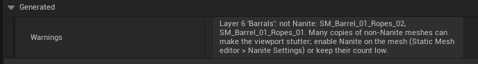
| Symptom | Check |
|---|---|
| Nothing spawns | Warnings first. Then Activate Main Mesh, an empty mesh list, Mute / Solo, and Density. |
| Meshes float or sink | Projection Type, Snap to Surface Max Distance, Projection Height and Depth; in the Volume tool, Offset From Surface. |
| Meshes don't follow the slope | Align to Surface on, and Absolute Rotation off. |
| Meshes on roads or paths | Never On Landscape Layer with a Clearance ring, or No Spawning on Tag on the road spline. |
| Volume dresses the wrong side | Check Projection (Inside a Room or Around Objects), then the Faces checkboxes against the labels on the box. |
| Mesh Cover finds nothing | Targets: box placement, Search Entire Level, Include Instances, Target Size Min / Max. Click Refresh after moving the covered meshes. |
| Cover buried in walls or floors | Clear Cover Inside Meshes with a larger Clearance. |
| Stacks too far apart or overlapping | Row Gap (negative sinks rows together). |